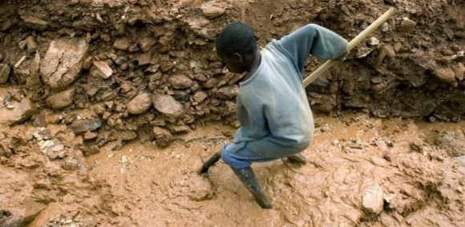

Ontginning van grondstoffen
Herkomst van coltan/tantaal en maatschappelijke context.
Voeg hier je doorlopende tekst toe over ontginning: herkomst, arbeidsomstandigheden, milieuschade, transport van ruwe grondstoffen en betrouwbaarheid van bronnen.
Voeg hier extra analyse toe met eigen argumentatie, cijfers en kritische reflectie.

Voeg hier extra beeld toe (kaart / detail)
Bron: voeg hier je bron toe